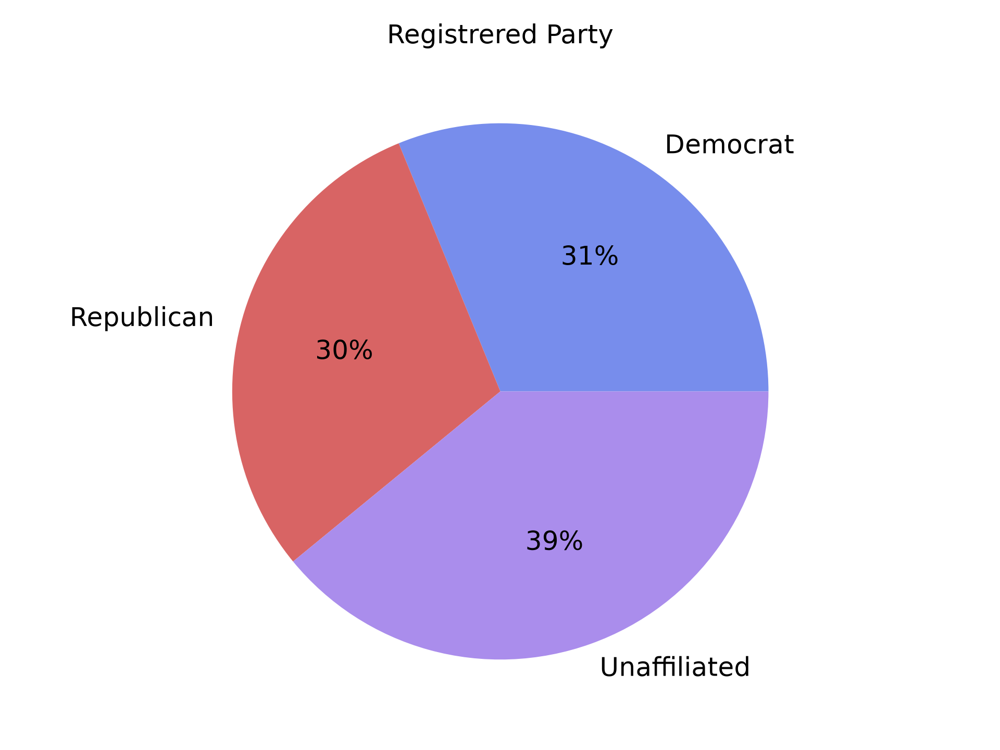
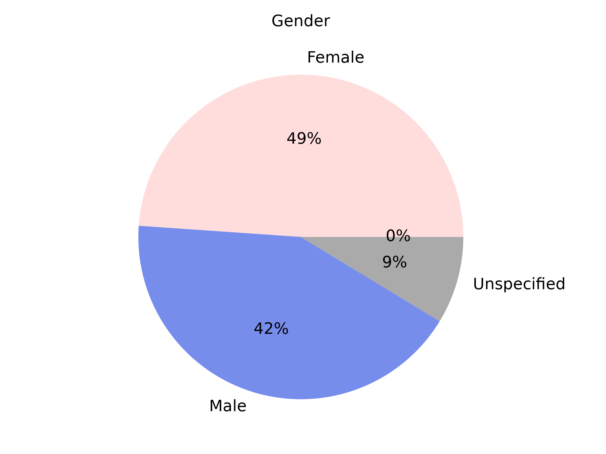
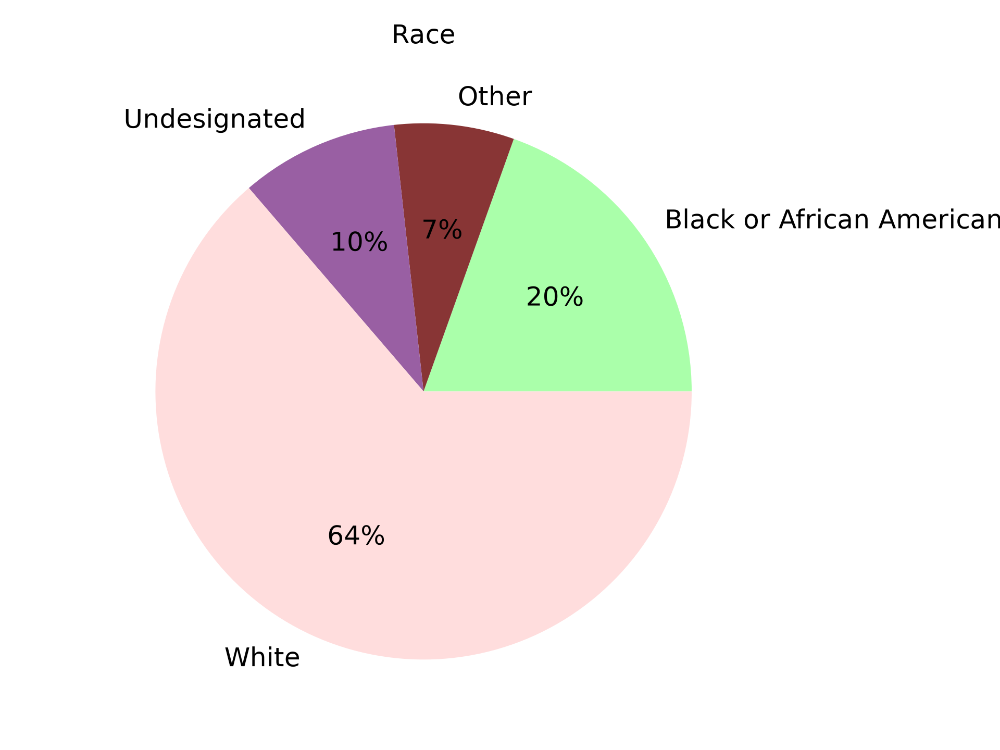
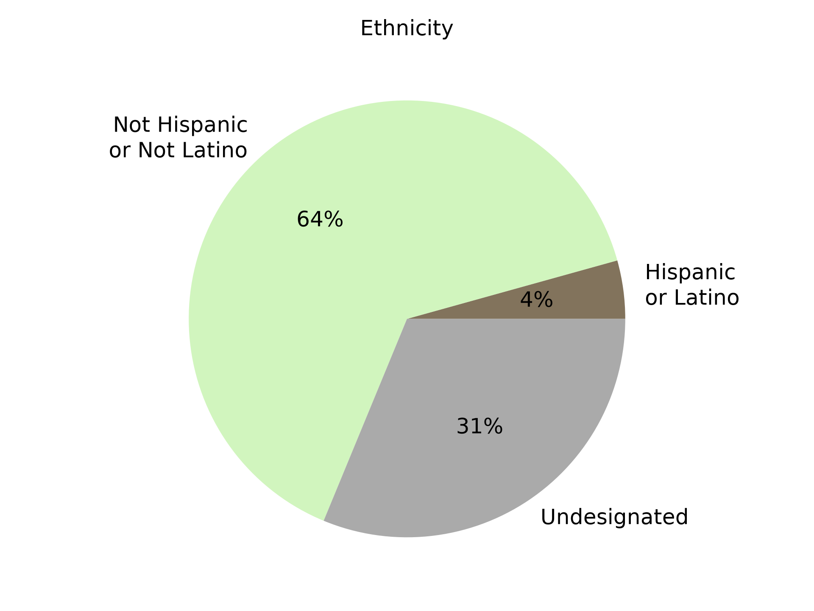
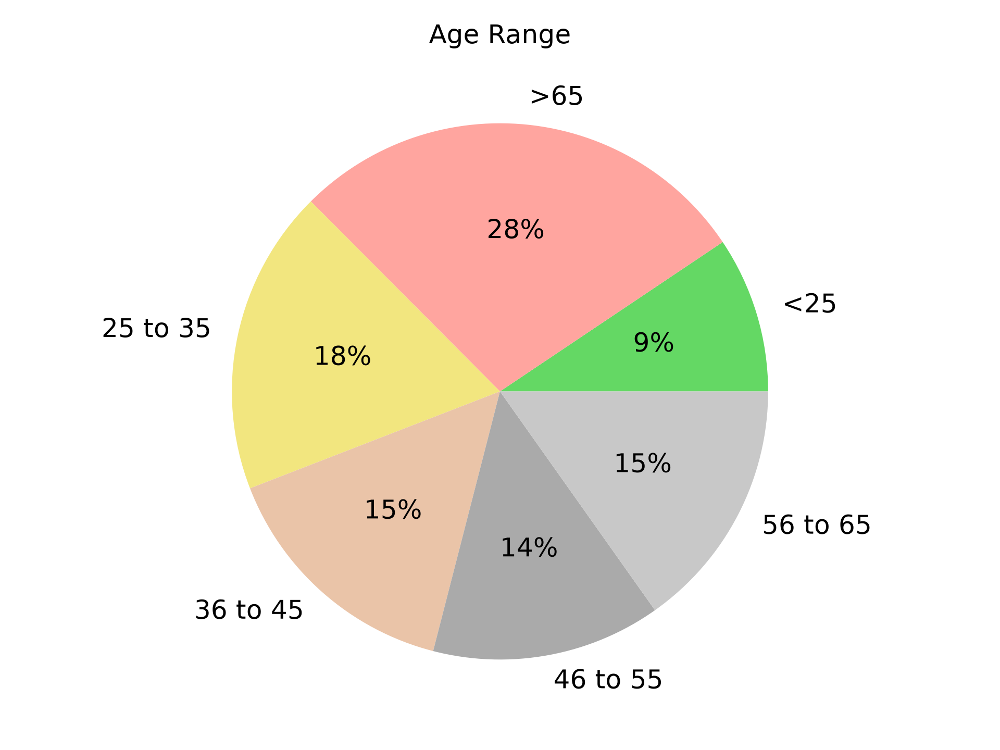
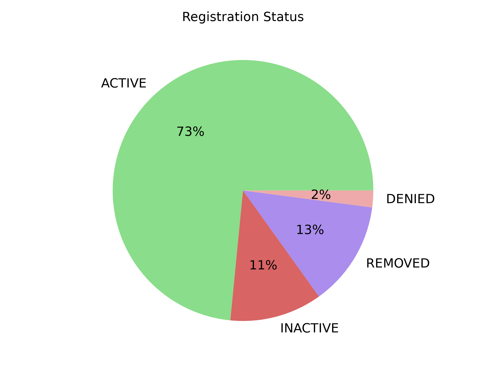
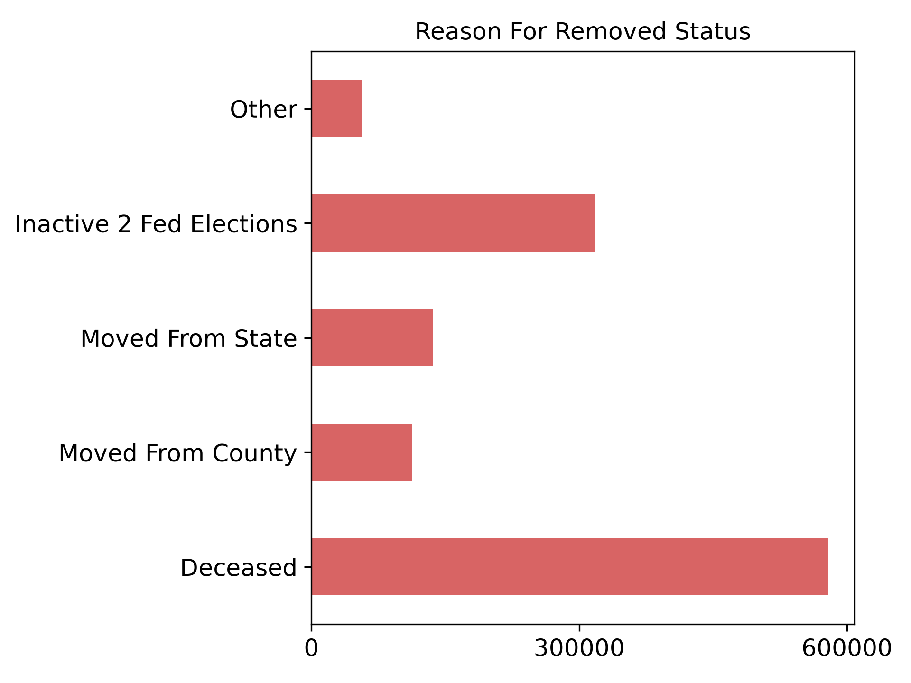
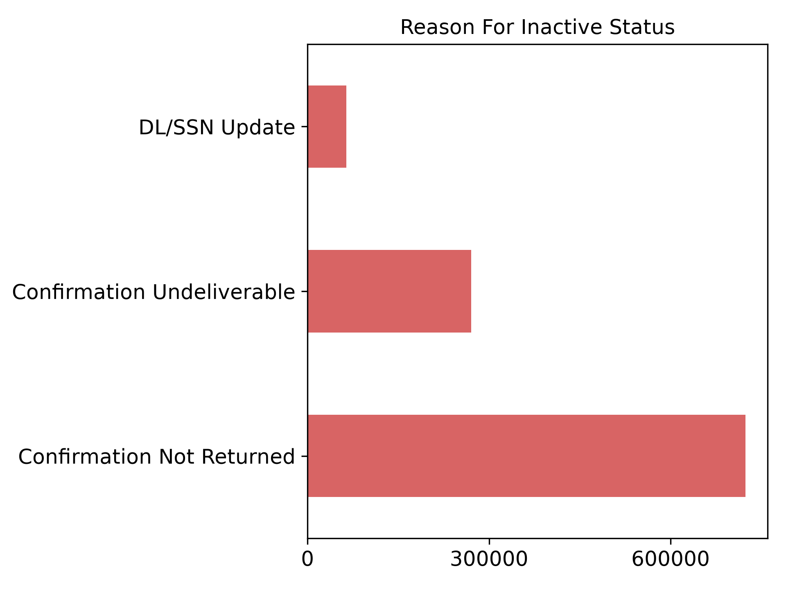

Party Registration
Percent of active voters registered for each politcal party.

Registered Voter Gender
Percent of each gender specified by active registered voters.

Registered Voter Race
Percent of each race specified by active registered voters. The Other slice is typically includes many possible choices for race like Asian, American Indian or Alaska Native, Native Hawaiian or Pacific Islander, and Two or More Races.

Registered Voter Ethnicity
Percent of registered voters who specified hispanic or latino ethnicity.

Registered Voter Age
Percentage of registered voters in the various age ranges based on their age at the end of the year.

Status of Voter's Registration
Percentage of voters assigned each of the status values. Many of the other charts only reflect active voters based on this value.

Reason For Voter's Registration Status Changed To Removed
There are many reasons a voter's status could have changed to removed. The most common ones are shown here with reasons occuring less than 4% of the time combined in Others.

Reason For Voter's Registration Status Changed To Inactive
There are many reasons a voter's status could have changed to inactive. The most common ones are shown here with reasons occuring less than 4% of the time combined in Others.